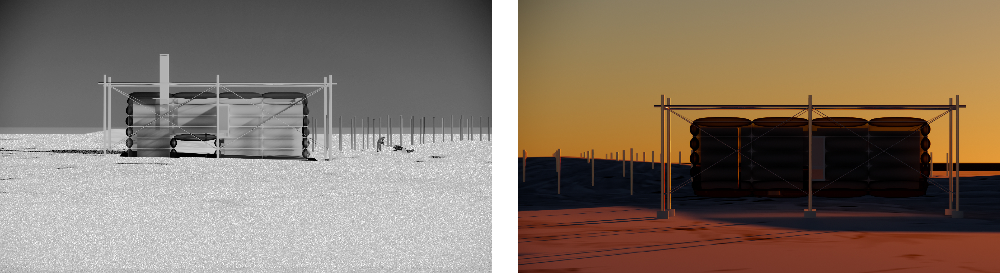

Architecture as Registering and Disclosure

From Measurement to Mobility
This project investigates the Albedo Effect and Dust in the Arctic, viewing it as an interaction between color and temperature. When dark dust falls on the white Arctic ice, it absorbs heat and causes the ice to melt, creating new topographies and landscapes.
The design investigates how this collected dust is not only measured but also preserved, archived, and physically transported out of the Arctic context to disclose the hidden natural and political genealogy of these particles.

Albedo & Dust
The four main factors—Black Carbon, Brown Carbon, Algae, and Mineral Dust—all contribute to heat absorption. This phenomenon is accelerating rapidly in our current climate context, driven by industrial pollution and new shipping routes crossing the Arctic.

Measuring Scale
Measuring the Albedo Effect is fundamentally a matter of scale and resolution, using different grids to investigate and collect data. At the largest scale, satellite imagery monitors broad changes. On-site, a measurement matrix (10M) is established to record continuous changes in the landscape topography, while individual measuring rods (0.1M) collect the actual melting snow and water.



The Outpost
An "Outpost" is first established to collect data in the Arctic, serving simultaneously as a container for scientific records and a living space. The design features replaceable "data capsules"—suspended structures wrapped in an ETFE skin for thermal insulation. These capsules are designed to ensure minimal contact with the ground, functioning as the primary interface between the harsh environment and the preservation of collected samples.

Agent & Route
The concept of the Archive is to move these Arctic samples back to the human world. A one-year cyclical route is designed for the barge ship. This route passes through the direct sources of pollution, such as resource extraction and mining sites, and connects to indirect sources, specifically the places of consumption in Europe and Asia.

On-site to Non-site
The grid is viewed as a form of "on-site" extraction in the Arctic. This extracted data is then transferred to a "non-site" location for analysis and display.

Science & Witness
The interior below deck is divided into the "Space of Science" and the "Space of Witness". The Space of Science holds the capsules, serving as functional cores where researchers live and conduct comparative experiments, while the Space of Witness is the remaining void space that opens to the public when the ship docks, allowing them to witness the evidence of the Albedo Effect returned from the Arctic.

Forensic Return
When leaving the Arctic, the ship carries the archive as a "Forensic Return" to the rest of the world. Conversely, when returning to the Arctic, it acts as an "Investigative Supply," bringing resources back to the research stations.